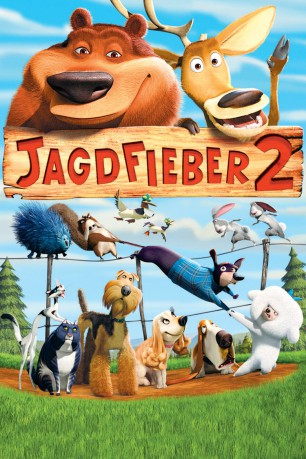

#5659 Jagdfieber 2
Alternativ: Open Season 2
 
 IMDB-Wertung: 5.7 / 10
IMDB-Wertung: 5.7 / 10  Metascore: 0
Metascore: 0 
Es kann ganz schön erschreckend sein, wenn man sich bindet - vor allem, wenn es „bis dass der Tod euch scheidet” bedeutet. Zum Ende von Jagdfieber waren Boog der Bär und der Haushund Mr. Weenie in den Wald zurückgekehrt, um sich den wilden Tieren anzuschließen, und der Hirsch Elliot hatte sich in die Hirschkuh Giselle verknallt.
Jahr: 2008
Dauer: 76 Minuten
FSK:
Land: USA Studio: NetflixTonspuren: DD5.1 - ,
Untertitel: Deutsch,
Auflösung: 1080p (1920x1080) Größe: 6389 MB
Genre: Komödie, Abenteuer, Animation/Trick, Familie
Regisseur: Matthew O'Callaghan, Todd Wilderman
Drehbuch: Junichi Masuda
Soundtrack:
Darsteller:
Datei: X:\Kinder Collections\Jagdfieber\Jagdfieber 2 (2008, FSK, 1920x1080).mkv seit 02.03.2017
Festplatte: Kinder-Filme+Trick
 Es gibt insgesamt 7 Filme in der Gruppe 'Kinder Collections\Jagdfieber'
Es gibt insgesamt 7 Filme in der Gruppe 'Kinder Collections\Jagdfieber'